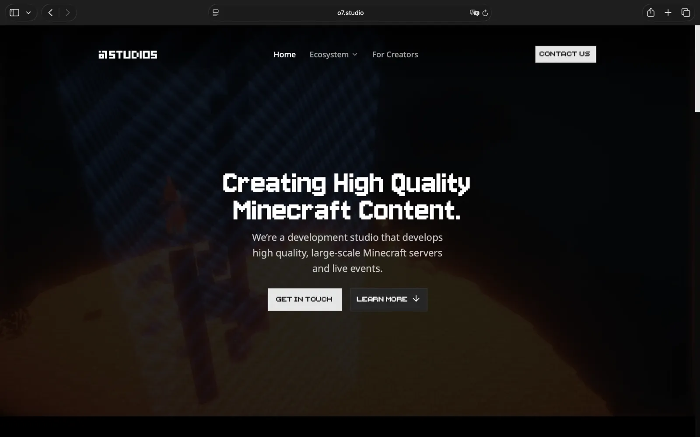

Selected work
o7studios
Visit websiteo7studios is a Minecraft development studio building large-scale servers, live events, creator experiences, and an ecosystem of tools for professional Minecraft development.

General project infos
o7studios is a Minecraft development studio focused on large-scale servers, live events, creator experiences, and reusable infrastructure for professional Minecraft projects. The work is not only about individual plugins; the studio also builds the surrounding ecosystem needed to develop, run, and scale servers faster.
The ecosystem consists of several technical products. Octopus is a backend and cross-server communication layer for Minecraft networks and related services such as websites or Discord bots. Megalodon is a Paper plugin development framework with game-state, GUI, messaging, border, storage, spectator, addon, and ecosystem-integration tooling. Cheetah is a cloud-native Minecraft reverse proxy for dynamic player routing, Kubernetes-oriented operation, multi-server setups, and crossplay.
Together these tools reduce repeated infrastructure work. Server teams can focus more on gameplay, events, and creator-specific features instead of rebuilding backend communication, plugin foundations, and routing logic for every project.
- Octopus Backend and cross-server communication layer for shared game data, real-time events, mTLS-secured clients, backups, Kubernetes deployment, and SDK usage across Java, Go, and TypeScript.
- Megalodon Paper plugin development framework with tooling for game states, GUIs, messaging, storage, borders, spectator systems, addons, and ecosystem integration.
- Cheetah Go-based Minecraft proxy for dynamic player routing, live transfers, Kubernetes-native scaling, multi-server operation, and Java/Bedrock crossplay.
My role
I led the technical engineering work for the o7studios ecosystem. That included the full planning, concept, and engineering direction for Octopus and Cheetah, as well as managing and planning the work around Megalodon.
Compared to CodeZero, where I planned selected services, o7 required full technical ownership of the engineering track. I planned the architecture, broke down implementation tasks, coordinated the work of my developer partners, and kept the backend, proxy, and Minecraft tooling pieces aligned as one system.
Details
- Role Technical engineering lead, software engineer
- Stack Primarily Go; also TypeScript and Java/Kotlin. Docker, gRPC, NATS, MongoDB.
- Product surface Large-scale Minecraft servers, live events, backend services, cross-server communication, Paper plugin tooling, reverse proxy infrastructure, and creator-facing development work.
- Work Technical planning and architecture for Octopus and Cheetah, Megalodon planning and task management, engineering-team coordination, Go services, Java/Kotlin Minecraft tooling, service communication, CLI tools, and TUIs.
- Source o7.studio